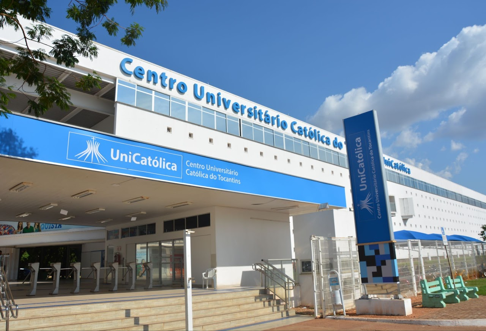

Instituição
Criada dia 25 de novembro de 1999, pela 56ª Assembleia Geral da União Brasiliense de Educação e Cultura, a Católica do Tocantins, teve em Reunião Extraordinária da Diretoria da UBEC, em 04 de abril 2002, provisoriamente, nomeados, como Diretora Geral, a Prof.ª Débora Pinto Niquini, como Vice-Diretor Administrativo, o Prof. José Cardoso de Sousa, como Vice- Diretor de Planejamento e Desenvolvimento, o Prof. Bruno de Azevedo Costa e como Vice-Diretor de Ensino, Pesquisa e Extensão, o Prof. Pe. Duile de Assis Castro. Na 193ª Reunião da Diretoria da UBEC, do dia 16 e 17 de dezembro de 2002, foram nomeados, em definitivo, respectivamente, como Diretor Geral e Vice-Diretor administrativo, o Prof. Luiz Antônio Hunold de Oliveira Damas, e o Prof. Rocco Procida.
Missão
"Potencializar a formação integral do cidadão, por meio da geração e transferência de conhecimento e da educação evangelizadora, na perspectiva do desenvolvimento sustentável".
Visão de Futuro
A Católica do Tocantins, desejando ser reconhecida pela excelência dos seus processos de ensino e aprendizagem, define a integridade, o respeito, a inovação, a transparência, a cooperação e integração, a equidade e a liderança responsável como sinalizadores de caminhos na consolidação do seu novo status institucional, buscando tornar-se excelente no ensino e na aprendizagem, na extensão e na pesquisa/iniciação científica.
"Ser Centro Universitário de referência na Região, reconhecido pela excelência dos processos de ensino e aprendizagem e da transferência de conhecimento caracterizada pela pastoralidade, inovação, empreendedorismo, pertinência, metodologias ativas e sustentabilidade".
Valores
Os valores estão apresentados a partir dos comportamentos desejados e que deveriam influenciar todos os envolvidos na comunidade acadêmica. A Católica do Tocantins elege como valores a espiritualidade, cidadania, inovação, excelência, família como possibilidade de vivências atitudinais que a caracterizam, diferenciadamente como IES Católica. Se espera que valores direcionem o comportamento individual e coletivo refletido nos processos, clima organizacional e lideranças.
Espiritualidade
Comportamentos desejáveis – ser tolerante, priorizar os vulneráveis, vivenciar a fé, isto é, ter convicção no que faz.
Cidadania
Comportamentos desejáveis – praticar ações claras e justas, servir as pessoas, cuidar da "Casa Comum";
Inovação
Comportamentos desejáveis – promover o aprendizado, assumir atitude proativas, agir com criatividade;
Excelência
Comportamentos desejáveis – buscar a qualidade, ter visão sistêmica, gerar resultados sustentáveis;
Família
Comportamentos desejáveis – respeitar as diferenças, trabalhar em equipe, valorizar e respeitar as pessoas;